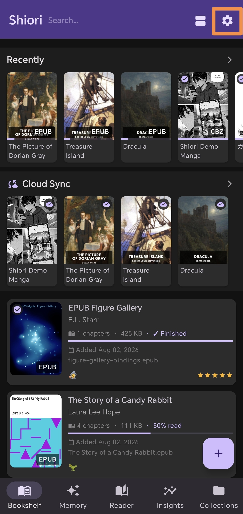

Wirelessly Send Books from Calibre
to Your Android Device
วิธีส่งหนังสือจาก Calibre เข้า Android
ผ่าน Wi-Fi ไร้สาย ไม่ต้องเสียบสาย USB
USBケーブル不要！
CalibreからAndroidへワイヤレス送信
无需 USB 数据线！
将 Calibre 图书无线发送至 Android
Managing an e-book library with Calibre is one of the best ways to organize your digital collection. Transferring books to your Android phone or tablet doesn't have to involve USB cables. With Shiori EPUB Reader, connect directly via Calibre Wireless Device over Wi-Fi in seconds!
การจัดการคลังหนังสือด้วยโปรแกรม Calibre บนคอมพิวเตอร์เป็นวิธีจัดระเบียบหนังสือที่ดีที่สุด แต่การส่งหนังสือเข้ามือถือหรือแท็บเล็ต Android ไม่จำเป็นต้องหา สาย USB มาเสียบอีกต่อไป! ด้วย Shiori EPUB Reader คุณสามารถเชื่อมต่อกับ Calibre Wireless Device ผ่าน Wi-Fi และส่งหนังสือเข้าเครื่องได้ทันที
パソコンのCalibreで電子書籍を管理するのは非常に便利ですが、Android端末へ本を転送するのにUSBケーブルを探す必要はもうありません。Shiori EPUB Readerのワイヤレスデバイス接続機能を使えば、Wi-Fi経由でワンクリック送信が可能です。
在电脑上使用 Calibre 管理电子书文库非常高效，但向 Android 设备传输图书不再需要繁琐的 USB 数据线。借助 Shiori EPUB 阅读器 的 Calibre 无线设备连接 功能，在同一 Wi-Fi 下几秒即可完成无线图书一键发送！
Video Tutorial (How-to Guide)
วิดีโอสาธิตการเชื่อมต่ออย่างละเอียด
動画で見る接続ガイド
视频操作演示指南
Watch the full step-by-step walkthrough to connect Calibre and Shiori wirelessly:
รับชมวิดีโอแนะนำขั้นตอนการเปิดใช้งาน Calibre Wireless ใน Shiori แบบก้าวต่อก้าว:
CalibreとShioriをワイヤレスで接続する手順を動画で確認できます：
观看完整视频演示，轻松学会 Calibre 与 Shiori 的无线连接与传输：
Step-by-Step Setup Guide
ขั้นตอนการเชื่อมต่อและส่งหนังสือ (8 สเต็ปง่ายๆ)
8ステップでわかる設定・送信手順
Step-by-Step 8 步设置与传输指引
Open the Calibre desktop software on your computer. In the top toolbar, click Connect / share and select Start wireless device connection.
เปิดโปรแกรม Calibre บนคอมพิวเตอร์ของคุณ ที่แถบเครื่องมือด้านบน ให้กดคลิกเมนู Connect / share (เชื่อมต่อ / แบ่งปัน) แล้วเลือก Start wireless device connection
パソコンで Calibre を開きます。上部ツールバーの 「接続/共有」 をクリックし、「ワイヤレスデバイス接続を開始」 を選択します。
在电脑上打开 Calibre 软件。在顶部工具栏中点击 “连接/共享”，然后选择 “启动无线设备连接”。

A dialog box will pop up displaying Calibre's listener IP Address and Port number (e.g. 192.168.1.x : 9090). Keep this dialog open or note down the numbers, then click OK.
หน้าต่างแจ้งเตือนจะแสดงหมายเลข IP Address และ Port ของเครื่องคอมพิวเตอร์ขึ้นมา (เช่น 192.168.1.x:9090) ให้จดหมายเลขนี้ไว้แล้วกด OK
ポップアップ画面にCalibreのIPアドレスとポート番号（例：192.168.1.x:9090）が表示されます。番号を控えてOKをクリックします。
弹窗将显示电脑的 IP 地址与端口号（例如 192.168.1.x:9090）。请记下该地址与端口号，然后点击确定。

Open Shiori EPUB Reader on your Android phone or tablet (connected to the same local Wi-Fi). Tap the Settings (⚙️) icon at the top right of the Bookshelf tab.
เปิดแอป Shiori EPUB Reader บนมือถือหรือแท็บเล็ต Android (ที่เชื่อมต่อ Wi-Fi วงเดียวกัน) แล้วแตะที่ไอคอน ตั้งค่า (⚙️) ที่มุมขวาบนของชั้นหนังสือ
同じWi-Fiに接続したAndroid端末で Shiori EPUB Reader を開き、本棚画面右上にある 設定（⚙️） アイコンをタップします。
在同局域网 Wi-Fi 下的 Android 设备上打开 Shiori EPUB 阅读器，在书架界面右上角点击 设置 (⚙️) 图标。

Scroll down in the settings list and select the Experimental / Calibre Wireless Device menu item.
เลื่อนลงมาในเมนูตั้งค่า แล้วเลือกหัวข้อ Experimental / Calibre Wireless Device (ฟีเจอร์ทดลองเชื่อมต่อ Calibre)
設定リストをスクロールし、「Experimental / Calibre Wireless Device」 メニュー項目をタップします。
向下滑动设置菜单，点击进入 “Experimental / Calibre Wireless Device” 选项。

Toggle ON the switch for Calibre Companion / Wireless Device to activate the wireless receiver engine in Shiori.
กดเปิดสวิตช์ Calibre Companion / Wireless Device เพื่อเปิดใช้งานระบบตัวรับสัญญาณไร้สายในแอป Shiori
「Calibre Companion / Wireless Device」 のトグルスイッチをオンにして、受信機能を有効化します。
将 “Calibre Companion / Wireless Device” 开关切换至开启状态，激活接收引擎。

Input your Calibre computer's IP Address and Port number into the fields, then tap the Connect button.
ป้อนหมายเลข IP Address และ Port ของคอมพิวเตอร์ลงในช่อง แล้วกดปุ่ม Connect (เชื่อมต่อ)
ステップ2で確認したパソコンの IPアドレス と ポート番号 を入力し、「Connect」 ボタンをタップします。
在输入框中填入步骤 2 中记录的 IP 地址 与 端口号，然后轻触 Connect 按钮。

Observe the status indicator. When it displays Connected, your Android device is now successfully paired with Calibre!
✅ Success Indicator
The green "Connected" badge confirms active bi-directional communication between desktop Calibre and Shiori.
สังเกตสถานะการเชื่อมต่อ เมื่อขึ้นข้อความว่า Connected (เชื่อมต่อแล้ว) แสดงว่ามือถือของคุณจับคู่กับ Calibre สำเร็จแล้ว!
✅ สถานะเชื่อมต่อสมบูรณ์
แถบสถานะสีเขียว Connected ยืนยันการสื่อสารแบบไร้สายสองทางระหว่างคอมพิวเตอร์และแอป Shiori
画面のステータス表示を確認します。「Connected」 と表示されれば、Android端末とCalibreのワイヤレスペアリング成功です！
✅ 接続成功
緑色のConnectedバッジが、パソコンのCalibreとShioriの双方向接続を証明します。
检查状态指示器。当界面显示 Connected 时，即表明 Android 设备已成功与电脑 Calibre 完成配对！
✅ 连接成功标志
绿色的 Connected 状态确认识别并建立了电脑与 Shiori 应用之间的双向无线通信。

Switch back to Calibre on your computer. You will see a new Send to device button on the main toolbar! Select any EPUB books in your library and click Send to device to instantly send them wirelessly.
สลับกลับมาที่หน้าต่างโปรแกรม Calibre บนคอมพิวเตอร์ จะมีปุ่มไอคอน Send to device (ส่งไปยังอุปกรณ์) ปรากฏขึ้นบนแถบเครื่องมือ! เลือกหนังสือ EPUB เล่มที่คุณต้องการอ่าน แล้วกดปุ่ม Send to device เพื่อส่งเข้ามือถือแบบไร้สายทันที
パソコンのCalibre画面に戻ると、上部ツールバーに 「端末に送信 (Send to device)」 ボタンが出現します。好きな本を選んでクリックするだけでワイヤレス転送完了です！
切回电脑端 Calibre 软件，主工具栏将出现全新的 “发送至设备 (Send to device)” 图标！选择要阅读的 EPUB 图书，点击即可瞬间无线传输至手机。
No Cables. Just Read.
Download Shiori EPUB Reader today and enjoy seamless wireless book transfers from Calibre, multi-language TTS, AI translation, and cloud sync.